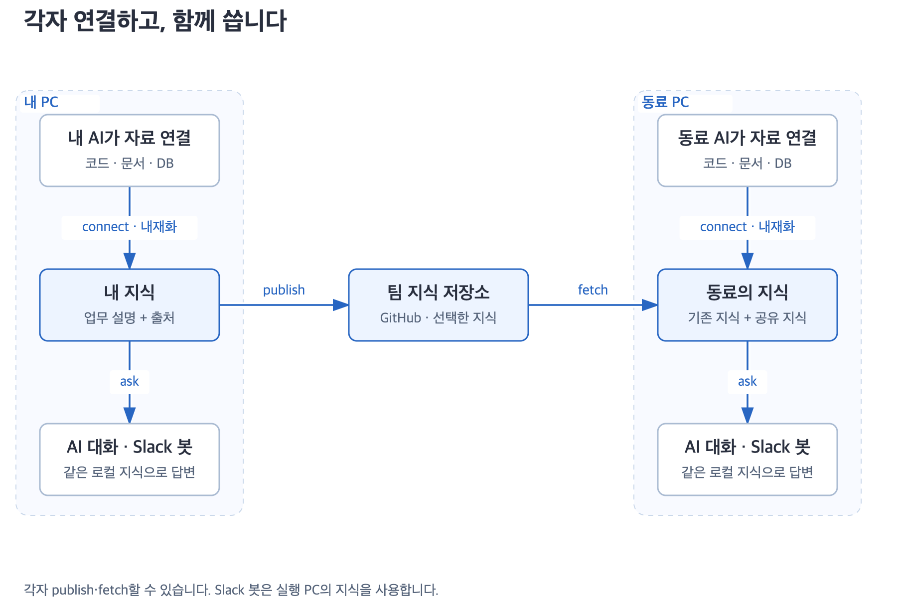
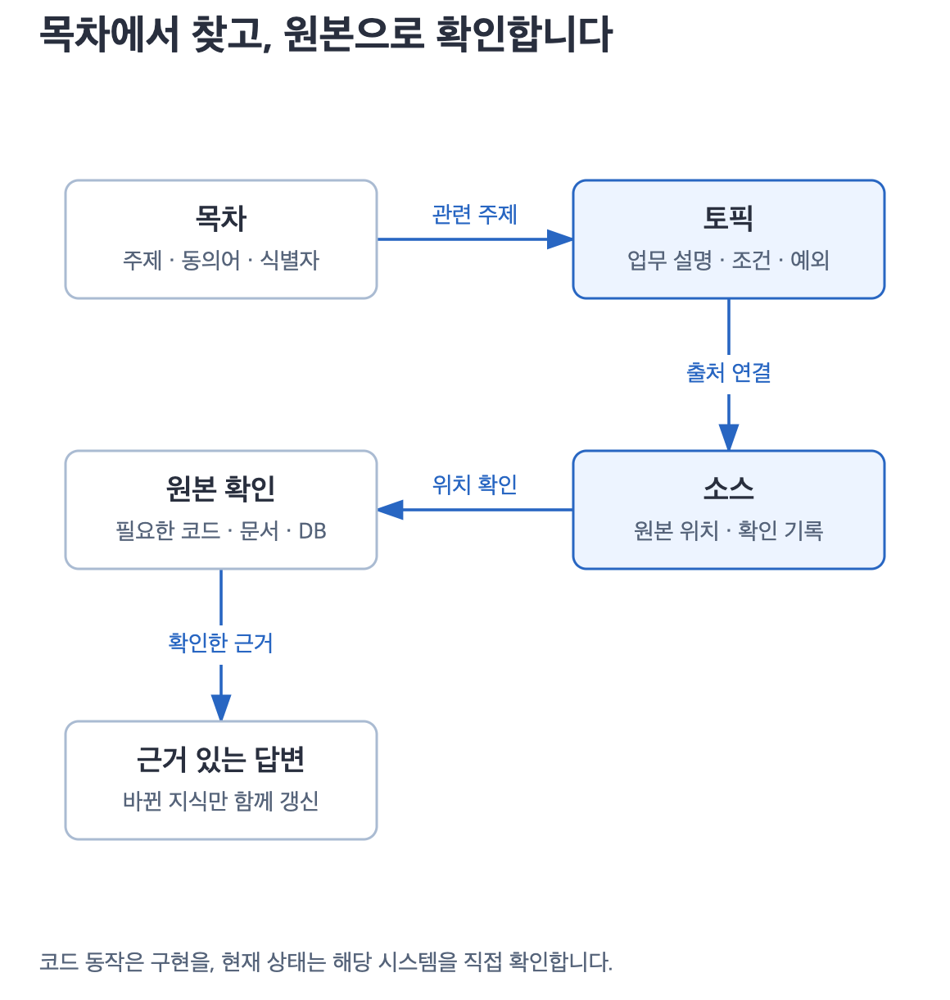
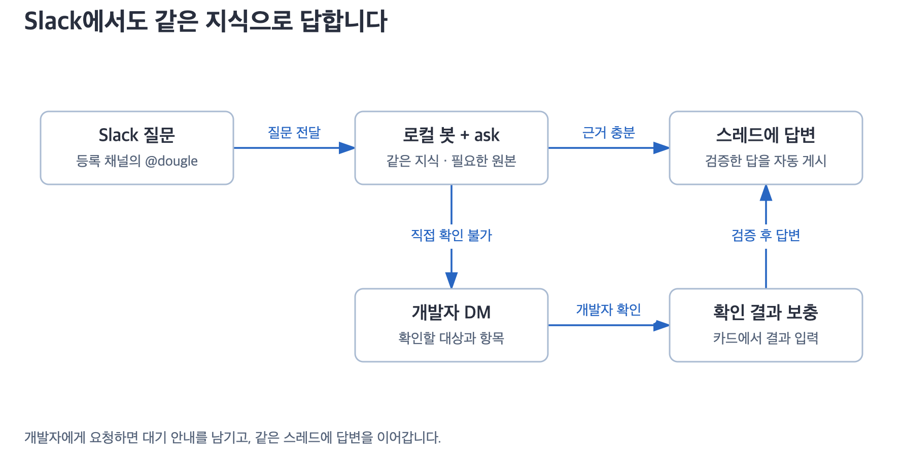

각자 연결하고, 함께 씁니다.
평소 쓰는 AI가 업무 자료를 지식으로 정리합니다. 팀과 나눈 지식은 AI 대화와 Slack 답변에 다시 씁니다.

내 PC에 지식으로 남습니다
코드·문서·DB를 연결하면 Claude Code·Codex가 실제 자료를 읽고 업무 설명과 출처를 저장합니다. 세션이 끝나도 남으며 다른 폴더에서 다시 사용할 수 있습니다.
publish는 선택한 지식을 팀 GitHub 저장소에 보내고, fetch는 팀 지식을 가져와 내 지식과 합칩니다. 서로 다른 설명과 내 정정은 근거와 함께 보존합니다.
목차에서 찾고, 원본으로 확인합니다

토픽에는 설명이, 소스에는 원본 위치와 확인 기록이 있습니다. 코드 동작은 구현을, 현재 상태는 해당 시스템을 확인합니다. 바뀐 지식이 있으면 필요한 부분만 갱신합니다.
Slack에서도 같은 지식을 씁니다

봇을 실행한 PC의 Claude CLI가 같은 지식과 dougle-ask를 사용합니다. 같은 스레드의 질문은 이어서 이해합니다.
개발자 확인이 필요하면 DM으로 요청하고 고객 스레드에는 대기 안내를 한 번 남깁니다. 결과를 보충하면 그 아래에 답변을 이어갑니다.